The Scholars of War
Nearly all books and magical tomes are held by the wise Order of Knowledge. Operating from the colossal Mage Tower and the Great Library, these wizards, witches, and arcane scholars harness magical energies to manipulate the battlefield.
All students begin as Apprentices, traditionally diverging by gender. Males, possessing raw structured power, focus on scholastic casting to become Mages and eventually Thaumaturges. Females, naturally attuned to complex energies, become Witches and Hexarchs, specializing in weakening and impairing adversaries. The rare individuals who master both schools through reversible alchemical processes merge into a dual-entity known as a Magus.
However, a secluded sect exists within the Great Library. Composed entirely of female scholars, this militant wing treats history and mathematics as weapons. Starting as Glossants, they apply combat awareness and predictive magic to fight on the frontlines. As they advance, they diverge into evasive Strategists or heavily armored Retaliators, culminating in the peerless Archons.
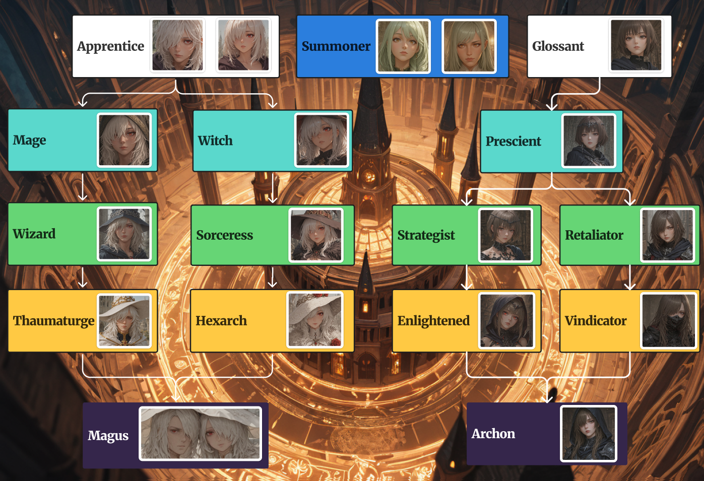
Active Roster
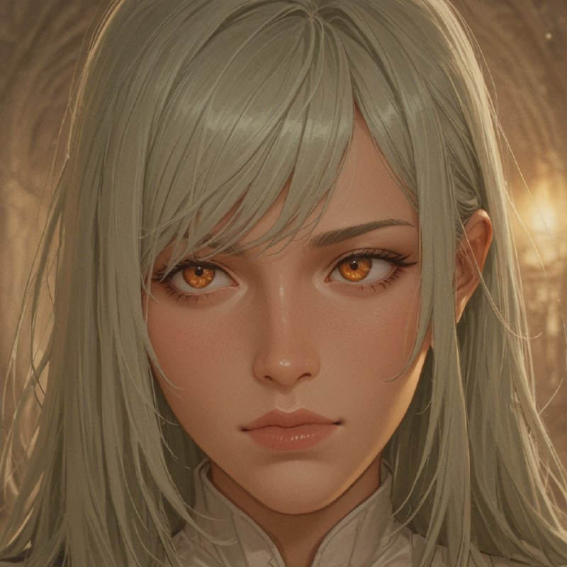
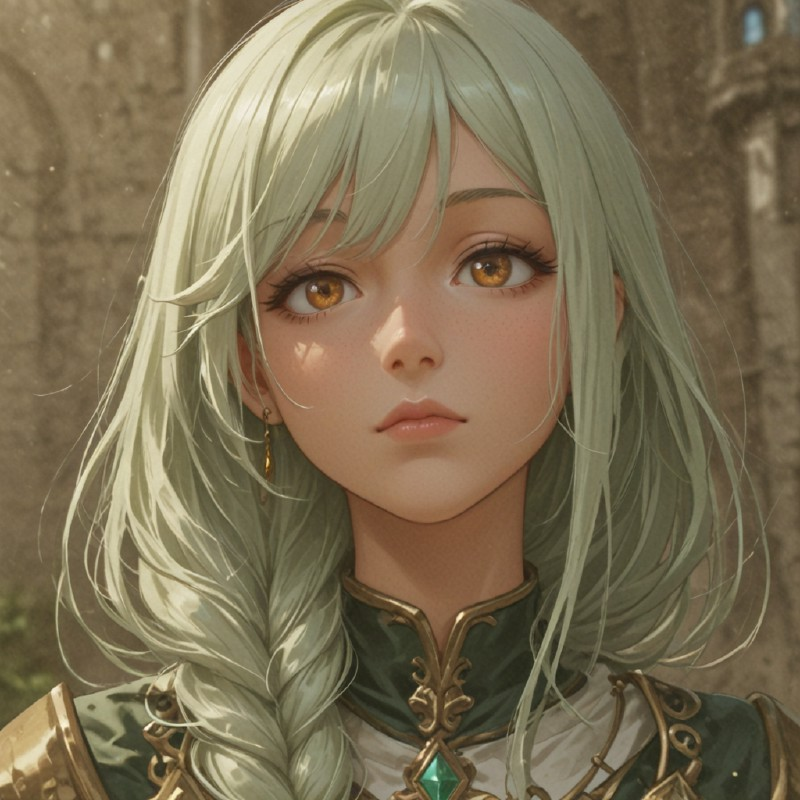
Summoner
Tactical conjurers who materialize swords and massive Golem Knights. Their ability to dynamically create offensive and defensive assets makes them invaluable commanders.
Apprentice
Young aspirants learning the fundamentals of arcane channeling. They utilize basic elemental strikes to hit multiple enemies simultaneously.
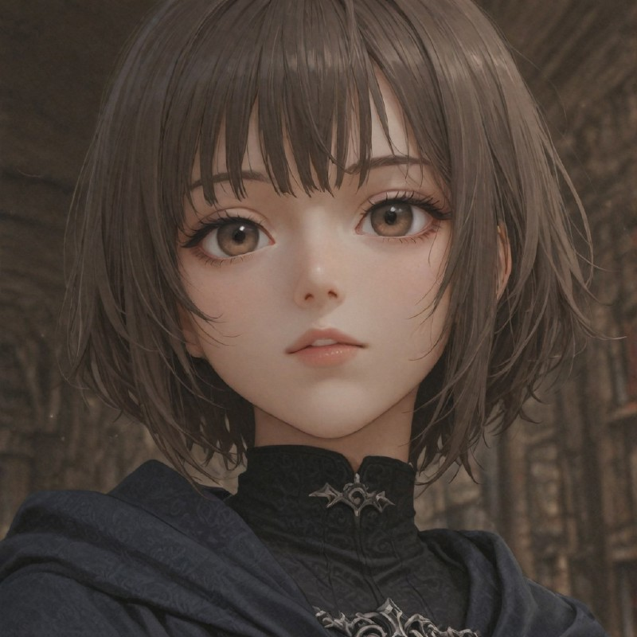
Glossant
Avid readers of history and war tactics within the Great Library. They apply their studies to create a fast-paced, flexible frontline combat style.
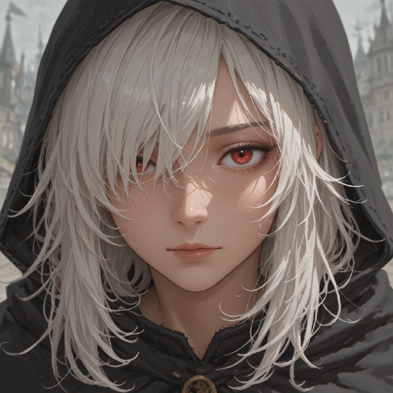
Mage
Male scholars who maximize structured magical damage. They focus on raw destructive output through concentrated fire and air spells.
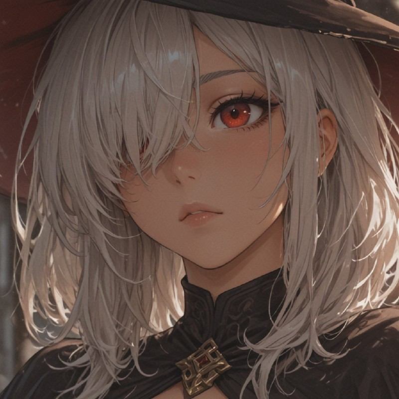
Witch
Female scholars attuned to primal energies. They utilize natural magic to unleash toxic roots and impair the enemy's vital functions.
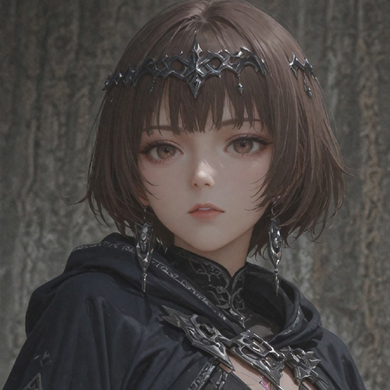
Prescient
Expert Glossants who utilize magical circlets to process battlefield data, reading opponent movements to become formidable, agile fighters.
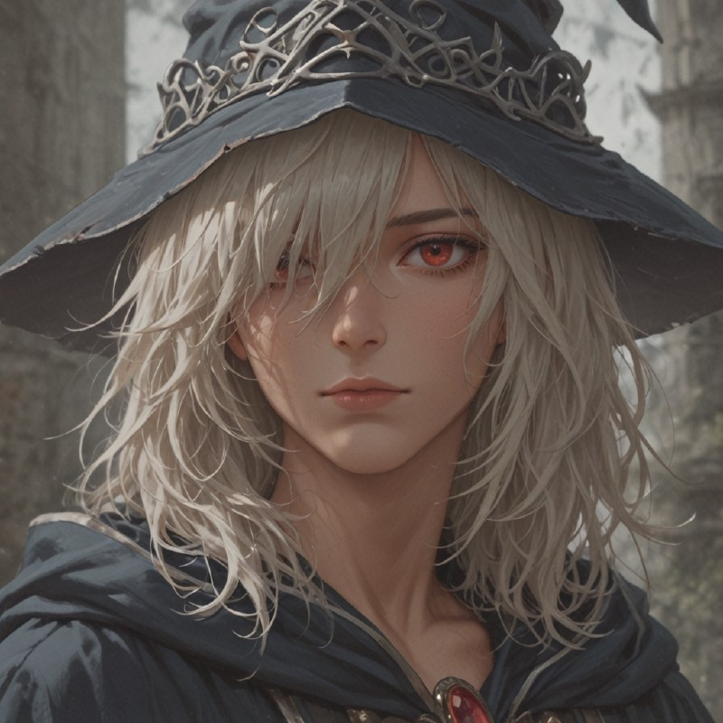
Wizard
Advanced Mages who have learned to conjure structural arcane armor, protecting their weak physical defenses while maintaining heavy bombardment.
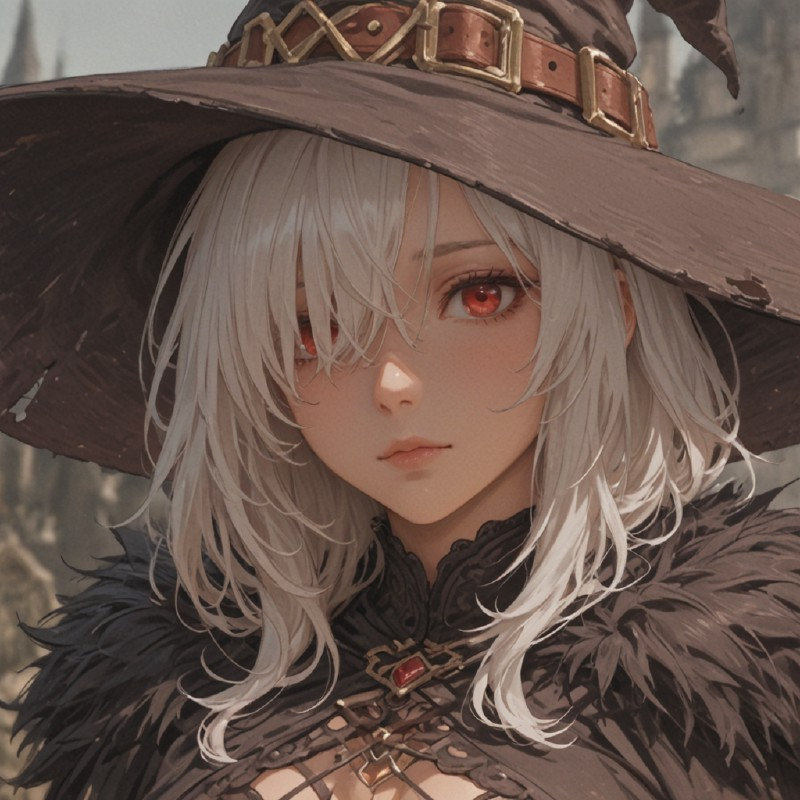
Sorceress
Experienced Witches possessing intensive knowledge of dark elements. They blind and debilitate enemy lines, weakening their offensive potential.
Strategist
Prescients with extensive knowledge of warfare. They dictate the flow of battle, deploying complex strategies and evading strikes through predictive calculation.
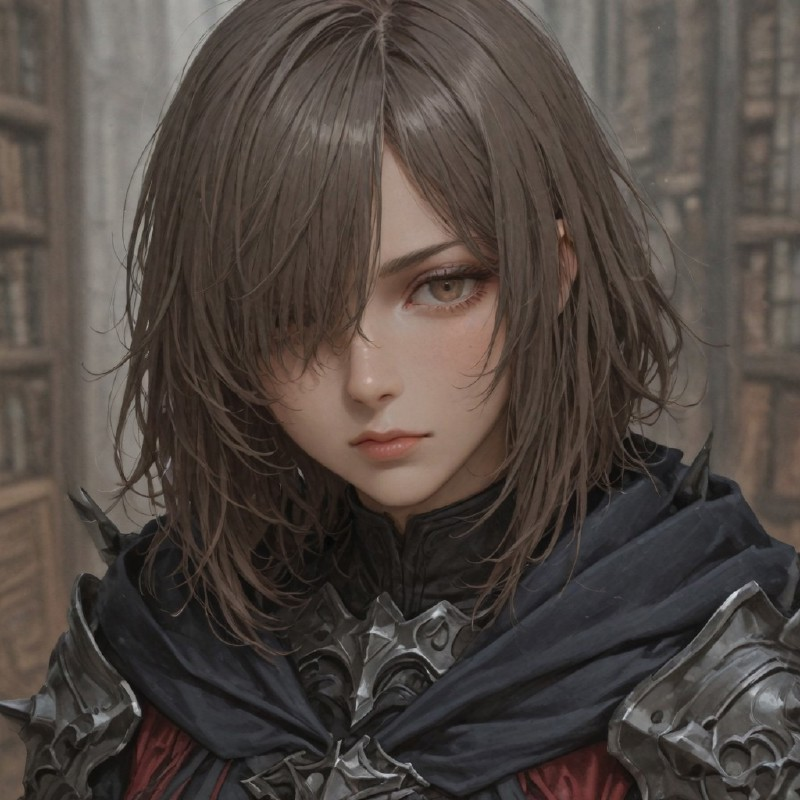
Retaliator
Prescients who apply knowledge to metallurgy. Instead of dodging, they channel kinetic force through reinforced armor to unleash brutal counterattacks.
Thaumaturge
The peak of structured magic. Capable of conjuring impossible spells, they rain pure destruction and meteor storms upon the adversary.
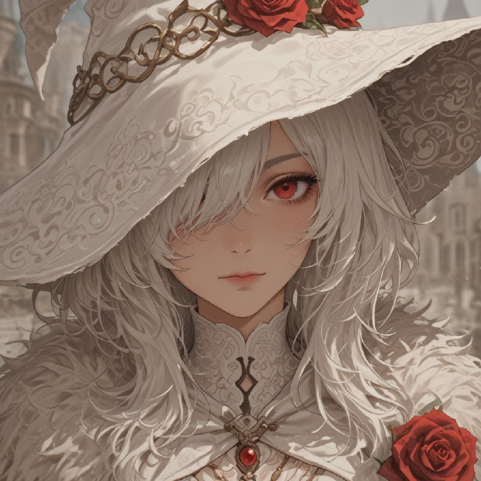
Hexarch
The absolute masters of nature and curses. Their hexes bypass magical resistances, draining the life and accuracy from entire enemy formations.
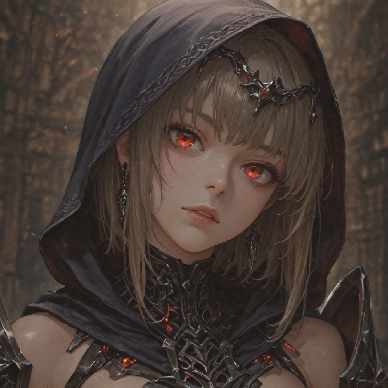
Enlightened
Master Strategists with absolute tactical awareness. Their precognitive abilities make them virtually untouchable on the frontlines.
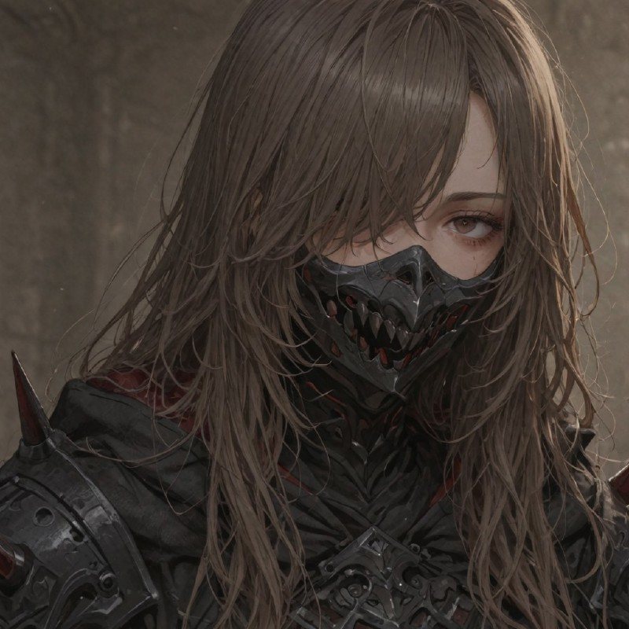
Vindicator
Walking fortresses of the Great Library. Clad in spiked, magically-enhanced plating, they return passive kinetic damage to any who dare strike them.
Magus
A single soul controlling both a male and female body simultaneously. They wield absolute mastery over both structured and natural magic, obliterating all resistances.
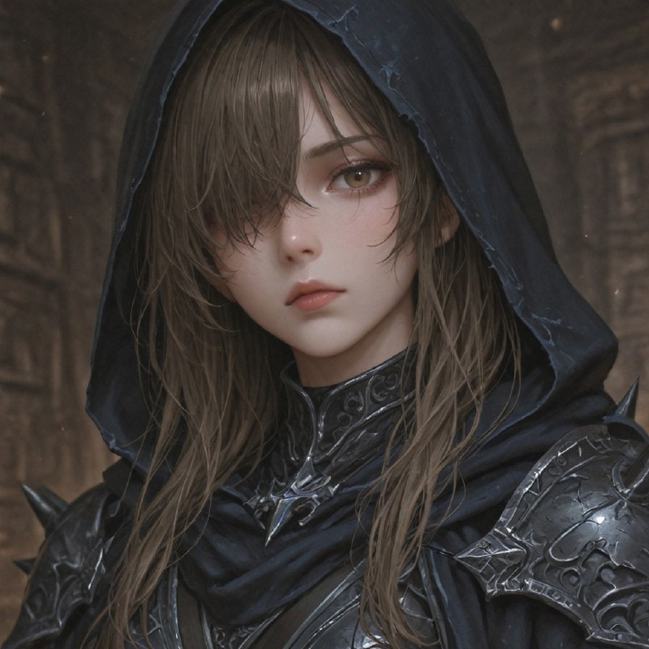
Archon
The martial apex of the Great Library. Master of both predictive evasion and kinetic armor, they deploy flawless tactics and devastating shockwaves.